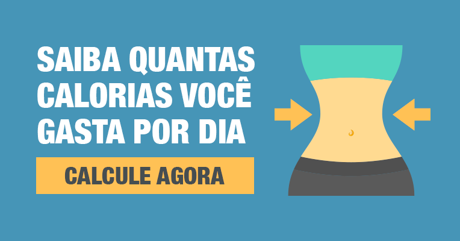

Home
Seja bem-vindo ao meu site pessoal! Me chamo Drauzio Varela, atuo na área médica e também já participei de diversos programas na TV.
No meu site, você poderá ter acesso à informações relacionadas à saúde com enfoque na parte de nutrição.
Além de artigos completos, também disponibilizo testes e calculadoras. Confira:

O índice de massa corporal (IMC) é uma medida internacional usada para calcular se uma pessoa está no peso ideal.

O gasto calórico basal é a quantidade de energia que o organismo gasta mesmo estando descansando ou dormindo.
Possui interesse em conhecer mais sobre mim e minhas experiências na área médica? Então, clique aqui!